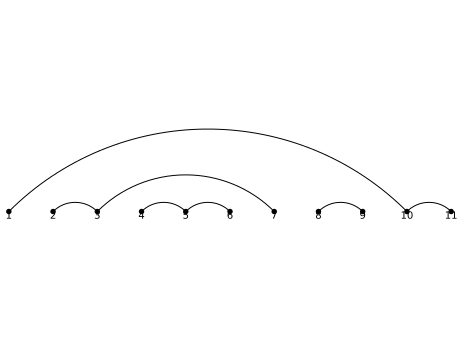

The product of two set partitions \(B\) and \(C\) is defined as the
set partition whose parts are the nonempty intersections between
each part of \(B\) and each part of \(C\). This product is also
the infimum of \(B\) and \(C\) in the classical set partition
lattice (that is, the coarsest set partition which is finer than
each of \(B\) and \(C\)). Consequently, inf acts as an alias for
this method.
When the ground set is totally ordered, the elements of each
block are listed in increasing order.
This is not related to standard set partitions (which simply
means set partitions of \([n] = \{ 1, 2, \ldots , n \}\) for some
integer \(n\)) or standardization (standardization()).
Return the supremum of self and t in the classical set
partition lattice.
The supremum of two set partitions \(B\) and \(C\) is obtained as the
transitive closure of the relation which relates \(i\) to \(j\) if
and only if \(i\) and \(j\) are in the same part in at least
one of the set partitions \(B\) and \(C\).
A set partition \(p\) of a set \(S\) is a partition of \(S\) into subsets
called parts and represented as a set of sets. By extension, a set
partition of a nonnegative integer \(n\) is the set partition of the
integers from 1 to \(n\). The number of set partitions of \(n\) is called
the \(n\)-th Bell number.
There is a natural integer partition associated with a set partition,
namely the nonincreasing sequence of sizes of all its parts.
There is a classical lattice associated with all set partitions of
\(n\). The infimum of two set partitions is the set partition obtained
by intersecting all the parts of both set partitions. The supremum
is obtained by transitive closure of the relation \(i\) related to \(j\)
if and only if they are in the same part in at least one of the set
partitions.
We will use terminology from partitions, in particular the length of
a set partition \(A = \{A_1, \ldots, A_k\}\) is the number of parts of \(A\)
and is denoted by \(|A| := k\). The size of \(A\) is the cardinality of \(S\).
We will also sometimes use the notation \([n] := \{1, 2, \ldots, n\}\).
EXAMPLES:
There are 5 set partitions of the set \(\{1,2,3\}\):
Return the crossing arcs of a set partition on a totally ordered set.
OUTPUT:
We place the elements of the ground set in order on a
line and draw the set partition by linking consecutive
elements of each block in the upper half-plane. This
function returns a list of the pairs of crossing lines
(as a line correspond to a pair, it returns a list of
pairs of pairs).
Return the crossing arcs of a set partition on a totally ordered set.
OUTPUT:
We place the elements of the ground set in order on a
line and draw the set partition by linking consecutive
elements of each block in the upper half-plane. This
function returns an iterator over the pairs of crossing
lines (as a line correspond to a pair, the iterator
produces pairs of pairs).
A (standard) set partition \(A\) can be split if there exist \(j < i\)
such that \(\max(A_j) < \min(A_i)\) where \(A\) is ordered by minimal
elements. This means we can write \(A = B | C\) for some nonempty set
partitions \(B\) and \(C\). We call a set partition atomic if it
cannot be split and is nonempty. Here, the pipe symbol
\(|\) is as defined in method pipe().
We place the elements of the ground set in order on a
line and draw the set partition by linking consecutive
elements of each block in the upper half-plane. This
function returns True if the picture obtained this
way has no crossings.
We place the elements of the ground set in order on a
line and draw the set partition by linking consecutive
elements of each block in the upper half-plane. This
function returns True if the picture obtained this
way has no nestings.
We place the elements of the ground set in order on a
line and draw the set partition by linking consecutive
elements of each block in the upper half-plane. This
function returns the list of the pairs of nesting lines
(as a line correspond to a pair, it returns a list of
pairs of pairs).
We place the elements of the ground set in order on a
line and draw the set partition by linking consecutive
elements of each block in the upper half-plane. This
function returns an iterator over the pairs of nesting
lines (as a line correspond to a pair, the iterator
produces pairs of pairs).
We place the elements of the ground set in order on a
line and draw the set partition by linking consecutive
elements of each block in the upper half-plane. This
function returns the number the pairs of crossing lines.
We place the elements of the ground set in order on a
line and draw the set partition by linking consecutive
elements of each block in the upper half-plane. This
function returns the number the pairs of nesting lines.
Return the action of an ordered set partition s on self.
Let \(A = \{A_1, A_2, \ldots, A_k\}\) be a set partition of some
set \(S\) and \(s\) be an ordered set partition (i.e., set composition)
of a subset of \([k]\). Let \(A^{\downarrow}\) denote the standardization
of \(A\), and \(A_{\{ i_1, i_2, \ldots, i_m \}}\) denote the sub-partition
\(\{A_{i_1}, A_{i_2}, \ldots, A_{i_m}\}\) for any subset
\(\{i_1, \ldots, i_m\}\) of \(\{1, \ldots, k\}\). We define the set
partition \(s(A)\) by
We create Figure 1 in [LM2011] (we note that there is a typo in the
lower-left corner of the table in the published version of the
paper, whereas the arXiv version gives the correct partition):
angle – (default: \(\pi/4\)) the angle at which the arcs take off
(if angle is negative, the arcs are drawn below the horizontal line)
color – (default: 'black') color of the arcs
base_set_dict – (optional) dictionary with keys elements
of base_set() and values as integer or float
EXAMPLES:
sage:p=SetPartition([[1,10,11],[2,3,7],[4,5,6],[8,9]])sage:p.plot()# needs sage.plot sage.symbolicGraphics object consisting of 29 graphics primitives
>>>fromsage.allimport*>>>p=SetPartition([[Integer(1),Integer(10),Integer(11)],[Integer(2),Integer(3),Integer(7)],[Integer(4),Integer(5),Integer(6)],[Integer(8),Integer(9)]])>>>p.plot()# needs sage.plot sage.symbolicGraphics object consisting of 29 graphics primitives

sage:p=SetPartition([[1,3,4],[2,5]])sage:print(p.plot().description())# needs sage.plot sage.symbolicPoint set defined by 1 point(s): [(0.0, 0.0)]Point set defined by 1 point(s): [(1.0, 0.0)]Point set defined by 1 point(s): [(2.0, 0.0)]Point set defined by 1 point(s): [(3.0, 0.0)]Point set defined by 1 point(s): [(4.0, 0.0)]Text '1' at the point (0.0,-0.1)Text '2' at the point (1.0,-0.1)Text '3' at the point (2.0,-0.1)Text '4' at the point (3.0,-0.1)Text '5' at the point (4.0,-0.1)Arc with center (1.0,-1.0) radii (1.41421356237...,1.41421356237...) angle 0.0 inside the sector (0.785398163397...,2.35619449019...)Arc with center (2.5,-0.5) radii (0.70710678118...,0.70710678118...) angle 0.0 inside the sector (0.785398163397...,2.35619449019...)Arc with center (2.5,-1.5) radii (2.1213203435...,2.1213203435...) angle 0.0 inside the sector (0.785398163397...,2.35619449019...)sage:p=SetPartition([['a','c'],['b','d'],['e']])sage:print(p.plot().description())# needs sage.plot sage.symbolicPoint set defined by 1 point(s): [(0.0, 0.0)]Point set defined by 1 point(s): [(1.0, 0.0)]Point set defined by 1 point(s): [(2.0, 0.0)]Point set defined by 1 point(s): [(3.0, 0.0)]Point set defined by 1 point(s): [(4.0, 0.0)]Text 'a' at the point (0.0,-0.1)Text 'b' at the point (1.0,-0.1)Text 'c' at the point (2.0,-0.1)Text 'd' at the point (3.0,-0.1)Text 'e' at the point (4.0,-0.1)Arc with center (1.0,-1.0) radii (1.41421356237...,1.41421356237...) angle 0.0 inside the sector (0.785398163397...,2.35619449019...)Arc with center (2.0,-1.0) radii (1.41421356237...,1.41421356237...) angle 0.0 inside the sector (0.785398163397...,2.35619449019...)sage:p=SetPartition([['a','c'],['b','d'],['e']])sage:print(p.plot(base_set_dict={'a':0,'b':1,'c':2,# needs sage.plot sage.symbolic....:'d':-2.3,'e':5.4}).description())Point set defined by 1 point(s): [(-2.3, 0.0)]Point set defined by 1 point(s): [(0.0, 0.0)]Point set defined by 1 point(s): [(1.0, 0.0)]Point set defined by 1 point(s): [(2.0, 0.0)]Point set defined by 1 point(s): [(5.4, 0.0)]Text 'a' at the point (0.0,-0.1)Text 'b' at the point (1.0,-0.1)Text 'c' at the point (2.0,-0.1)Text 'd' at the point (-2.3,-0.1)Text 'e' at the point (5.4,-0.1)Arc with center (-0.6...,-1.65) radii (2.3334523779...,2.3334523779...) angle 0.0 inside the sector (0.785398163397...,2.35619449019...)Arc with center (1.0,-1.0) radii (1.4142135623...,1.4142135623...) angle 0.0 inside the sector (0.785398163397...,2.35619449019...)
>>>fromsage.allimport*>>>p=SetPartition([[Integer(1),Integer(3),Integer(4)],[Integer(2),Integer(5)]])>>>print(p.plot().description())# needs sage.plot sage.symbolicPoint set defined by 1 point(s): [(0.0, 0.0)]Point set defined by 1 point(s): [(1.0, 0.0)]Point set defined by 1 point(s): [(2.0, 0.0)]Point set defined by 1 point(s): [(3.0, 0.0)]Point set defined by 1 point(s): [(4.0, 0.0)]Text '1' at the point (0.0,-0.1)Text '2' at the point (1.0,-0.1)Text '3' at the point (2.0,-0.1)Text '4' at the point (3.0,-0.1)Text '5' at the point (4.0,-0.1)Arc with center (1.0,-1.0) radii (1.41421356237...,1.41421356237...) angle 0.0 inside the sector (0.785398163397...,2.35619449019...)Arc with center (2.5,-0.5) radii (0.70710678118...,0.70710678118...) angle 0.0 inside the sector (0.785398163397...,2.35619449019...)Arc with center (2.5,-1.5) radii (2.1213203435...,2.1213203435...) angle 0.0 inside the sector (0.785398163397...,2.35619449019...)>>>p=SetPartition([['a','c'],['b','d'],['e']])>>>print(p.plot().description())# needs sage.plot sage.symbolicPoint set defined by 1 point(s): [(0.0, 0.0)]Point set defined by 1 point(s): [(1.0, 0.0)]Point set defined by 1 point(s): [(2.0, 0.0)]Point set defined by 1 point(s): [(3.0, 0.0)]Point set defined by 1 point(s): [(4.0, 0.0)]Text 'a' at the point (0.0,-0.1)Text 'b' at the point (1.0,-0.1)Text 'c' at the point (2.0,-0.1)Text 'd' at the point (3.0,-0.1)Text 'e' at the point (4.0,-0.1)Arc with center (1.0,-1.0) radii (1.41421356237...,1.41421356237...) angle 0.0 inside the sector (0.785398163397...,2.35619449019...)Arc with center (2.0,-1.0) radii (1.41421356237...,1.41421356237...) angle 0.0 inside the sector (0.785398163397...,2.35619449019...)>>>p=SetPartition([['a','c'],['b','d'],['e']])>>>print(p.plot(base_set_dict={'a':Integer(0),'b':Integer(1),'c':Integer(2),# needs sage.plot sage.symbolic...'d':-RealNumber('2.3'),'e':RealNumber('5.4')}).description())Point set defined by 1 point(s): [(-2.3, 0.0)]Point set defined by 1 point(s): [(0.0, 0.0)]Point set defined by 1 point(s): [(1.0, 0.0)]Point set defined by 1 point(s): [(2.0, 0.0)]Point set defined by 1 point(s): [(5.4, 0.0)]Text 'a' at the point (0.0,-0.1)Text 'b' at the point (1.0,-0.1)Text 'c' at the point (2.0,-0.1)Text 'd' at the point (-2.3,-0.1)Text 'e' at the point (5.4,-0.1)Arc with center (-0.6...,-1.65) radii (2.3334523779...,2.3334523779...) angle 0.0 inside the sector (0.785398163397...,2.35619449019...)Arc with center (1.0,-1.0) radii (1.4142135623...,1.4142135623...) angle 0.0 inside the sector (0.785398163397...,2.35619449019...)
Given a set partition \(A = \{A_1, \ldots, A_n\}\) of an ordered
set \(S\), the standardization of \(A\) is the set partition of
\(\{1, 2, \ldots, |S|\}\) obtained by replacing the elements of
the parts of \(A\) by the integers \(1, 2, \ldots, |S|\) in such
a way that their relative order is preserved (i. e., the
smallest element in the whole set partition is replaced by
\(1\), the next-smallest by \(2\), and so on).
Strict coarsening is the binary relation on set partitions
defined as the transitive-and-reflexive closure of the
relation \(\prec\) defined as follows: For two set partitions
\(A\) and \(B\), we have \(A \prec B\) if there exist parts
\(A_i, A_j\) of \(A\) such that \(\max(A_i) < \min(A_j)\) and
\(B = A \setminus \{A_i, A_j\} \cup \{ A_i \cup A_j \}\).
Convert a set partition of \(\{1,...,n\}\) to a word of length \(n\)
with letters in the nonnegative integers such that each
letter is at most 1 larger than all the letters before.
INPUT:
bijection – (default: blocks) defines the map from
set partitions to restricted growth functions. These are
currently:
Convert a set partition of \(\{1,...,n\}\) to a word of length \(n\)
with letters in the nonnegative integers such that each
letter is at most 1 larger than all the letters before.
The word is obtained by sorting the blocks by their minimal
element and setting the letters at the positions of the
elements in the \(i\)-th block to \(i\).
Convert a set partition of \(\{1,...,n\}\) to a word of length \(n\)
with letters in the nonnegative integers such that each
letter is at most 1 larger than all the letters before.
The \(i\)-th letter of the word is the numbers of crossings of
the arc (or half-arc) in the extended arc diagram ending at
\(i\), with arcs (or half-arcs) beginning at a smaller element
and ending at a larger element.
Return the rook diagram obtained by placing rooks according to
Wachs and White’s bijection gamma.
Note that our index convention differs from the convention in
[WW1991]: regarding the rook board as a lower-right
triangular grid, we refer with \((i,j)\) to the cell in the
\(i\)-th column from the right and the \(j\)-th row from the top.
The algorithm proceeds as follows: non-attacking rooks are
placed beginning at the left column. If \(n+1-i\) is an
opener, column \(i\) remains empty. Otherwise, we place a rook
into column \(i\), such that the number of cells below the
rook, which are not yet attacked by another rook, equals the
index of the block to which \(n+1-i\) belongs.
Return the rook diagram obtained by placing rooks according to
Wachs and White’s bijection rho.
Note that our index convention differs from the convention in
[WW1991]: regarding the rook board as a lower-right
triangular grid, we refer with \((i,j)\) to the cell in the
\(i\)-th column from the right and the \(j\)-th row from the top.
The algorithm proceeds as follows: non-attacking rooks are
placed beginning at the top row. The columns corresponding
to the closers of the set partition remain empty. Let \(rs_j\)
be the number of closers which are larger than \(j\) and
whose block is before the block of \(j\).
We then place a rook into row \(j\), such that the number of
cells to the left of the rook, which are not yet attacked by
another rook and are not in a column corresponding to a
closer, equals \(rs_j\), unless there are not enough cells in
this row available, in which case the row remains empty.
One can show that the precisely those rows which correspond
to openers of the set partition remain empty.
An (unordered) partition of a set \(S\) is a set of pairwise
disjoint nonempty subsets with union \(S\), and is represented
by a sorted list of such subsets.
SetPartitions(s) returns the class of all set partitions of the set
s, which can be given as a set or a string; if a string, each
character is considered an element.
SetPartitions(n), where n is an integer, returns the class of
all set partitions of the set \(\{1, 2, \ldots, n\}\).
You may specify a second argument \(k\). If \(k\) is an integer,
SetPartitions returns the class of set partitions into \(k\) parts;
if it is an integer partition, SetPartitions returns the class of
set partitions whose block sizes correspond to that integer partition.
The Bell number \(B_n\), named in honor of Eric Temple Bell,
is the number of different partitions of a set with \(n\) elements.
Convert a word of length \(n\) with letters in the nonnegative
integers such that each letter is at most 1 larger than all
the letters before to a set partition of \(\{1,...,n\}\).
INPUT:
w – a restricted growth word
bijection – (default: blocks) defines the map from
restricted growth functions to set partitions. These are
currently:
Convert a word of length \(n\) with letters in the nonnegative
integers such that each letter is at most 1 larger than all
the letters before to a set partition of \(\{1,...,n\}\).
w[i] is the index of the block containing i+1 when
sorting the blocks by their minimal element.
Convert a word of length \(n\) with letters in the nonnegative
integers such that each letter is at most 1 larger than all
the letters before to a set partition of \(\{1,...,n\}\).
The \(i\)-th letter of the word is the numbers of crossings of
the arc (or half-arc) in the extended arc diagram ending at
\(i\), with arcs (or half-arcs) beginning at a smaller element
and ending at a larger element.
Convert a rook placement of the triangular grid to a set
partition of \(\{1,...,n\}\).
If n is not given, it is first checked whether it can be
determined from the parent, otherwise it is the maximal
occurring integer in the set of rooks.
INPUT:
rooks – list of pairs \((i,j)\) satisfying
\(0 < i < j < n+1\)
bijection – (default: arcs) defines the map from
rook placements to set partitions. These are currently:
Return the set partition of \(\{1,...,n\}\) corresponding to the
given rook placement by applying Wachs and White’s bijection
gamma.
Note that our index convention differs from the convention in
[WW1991]: regarding the rook board as a lower-right
triangular grid, we refer with \((i,j)\) to the cell in the
\(i\)-th column from the right and the \(j\)-th row from the top.
INPUT:
n – integer specifying the size of the set
partition to be produced
rooks – list of pairs \((i,j)\) such that \(0 < i < j < n+1\)
Note that the rook \((1, 4)\), translated into Wachs and
White’s convention, is a rook in row 4 from the top and
column 13 from the left. The corresponding set partition
is:
Return the set partition of \(\{1,...,n\}\) corresponding to the
given rook placement by applying Wachs and White’s bijection
rho.
Note that our index convention differs from the convention in
[WW1991]: regarding the rook board as a lower-right
triangular grid, we refer with \((i,j)\) to the cell in the
\(i\)-th column from the right and the \(j\)-th row from the top.
INPUT:
n – integer specifying the size of the set
partition to be produced
rooks – list of pairs \((i,j)\) such that \(0 < i < j < n+1\)
Note that the rook \((1, 2)\), translated into Wachs and
White’s convention, is a rook in row 2 from the top and
column 13 from the left. The corresponding set partition
is:
Check if \(s < t\) in the refinement ordering on set partitions.
This means that \(s\) is a refinement of \(t\) and satisfies
\(s \neq t\).
A set partition \(s\) is said to be a refinement of a set
partition \(t\) of the same set if and only if each part of
\(s\) is a subset of a part of \(t\).
Return True if s is a strict refinement of t and
satisfies \(s \neq t\).
A set partition \(s\) is said to be a strict refinement of a set
partition \(t\) of the same set if and only if one can obtain
\(t\) from \(s\) by repeatedly combining pairs of parts whose
convex hulls don’t intersect (i. e., whenever we are combining
two parts, the maximum of each of them should be smaller than
the minimum of the other).
Check if \(s < t\) in the refinement ordering on set partitions.
This means that \(s\) is a refinement of \(t\) and satisfies
\(s \neq t\).
A set partition \(s\) is said to be a refinement of a set
partition \(t\) of the same set if and only if each part of
\(s\) is a subset of a part of \(t\).
This algorithm counts for each block of the partition the
number of ways to fill it using values from the set. Then,
for each distinct value \(v\) of block size, we divide the result by
the number of ways to arrange the blocks of size \(v\) in the
set partition.
For example, if we want to count the number of set partitions
of size 13 having [3,3,3,2,2] as underlying partition we
compute the number of ways to fill each block of the
partition, which is \(\binom{13}{3} \binom{10}{3} \binom{7}{3}
\binom{4}{2}\binom{2}{2}\) and as we have three blocks of size
\(3\) and two blocks of size \(2\), we divide the result by
\(3!2!\) which gives us \(600600\).
Based on the cardinality method. For each block size \(k_i\),
we choose a uniformly random subset \(X_i \subseteq S_i\) of
size \(k_i\) of the elements \(S_i\) that have not yet been selected.
Thus, we define \(S_{i+1} = S_i \setminus X_i\) with \(S_i = S\)
being the defining set. This is not yet proven to be uniformly
distributed, but numerical tests show this is likely uniform.